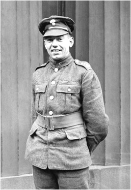

Images
by Eric Washburn
Use the following self closing image tag to embed photos:
<img src="" alt="" width="" height="">
The src="" ?parameter? will find the file at the specified location.
The alt="" ?parameter? will display an alternative text in the case where the image does not load.
It will also enable accessibility for visually impaired users.
Also remember to include additional details like height and width for better accessibility.
